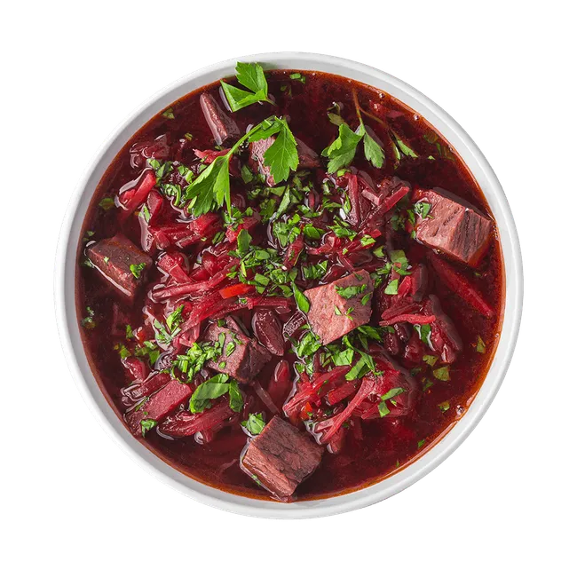
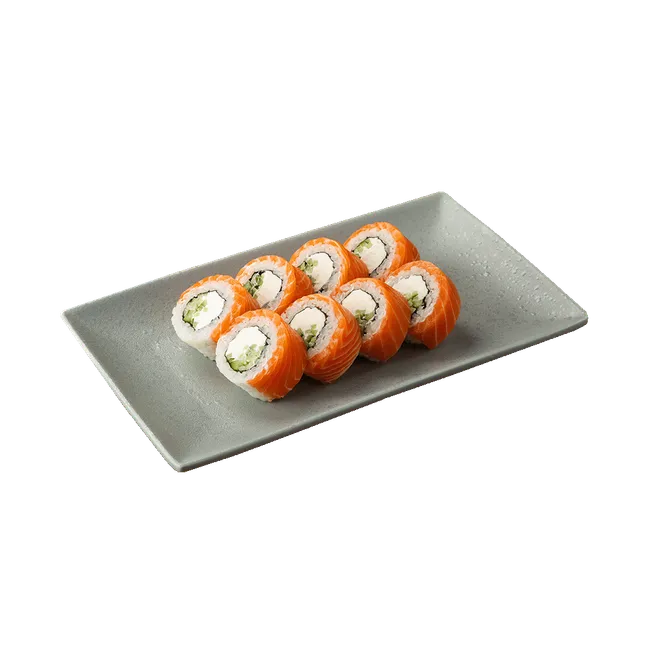
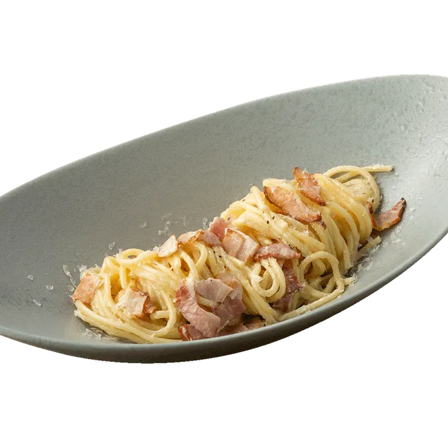

| Название блюда | Ваша оценка | Ссылка на рецепт | Фото блюда |
|---|---|---|---|
| Борщ с говядиной | 9 | Открыть рецепт |  |
| Филадельфия | 8 | Открыть рецепт |  |
| Цезарь с цыплёнком | 7 | Открыть рецепт | |
| Спагетти Карбонара | 10 | Открыть рецепт |  |
| Пицца Маргарита | 6 | Открыть рецепт | |
| Том Ям с морепродуктами | 9 | Открыть рецепт | |
| Удон с цыплёнком | 8 | Открыть рецепт | |